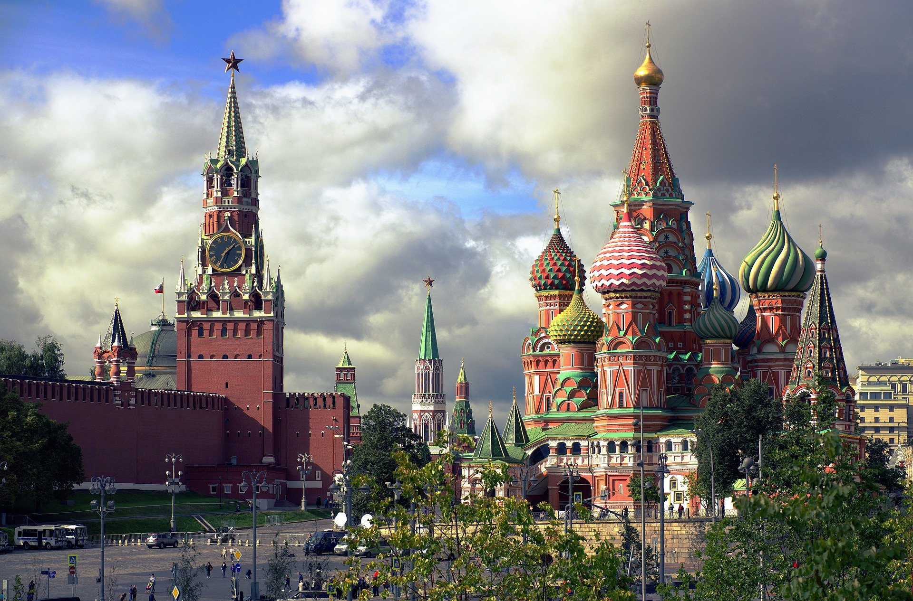
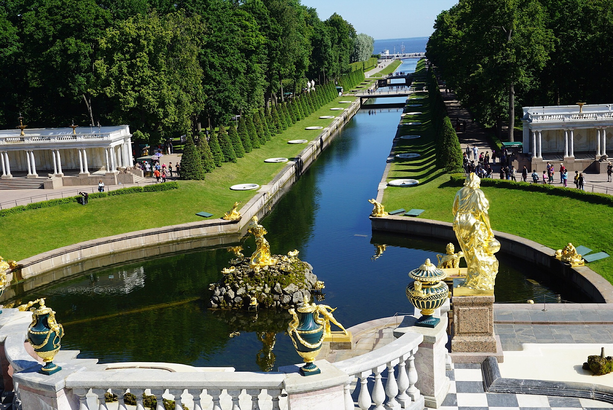
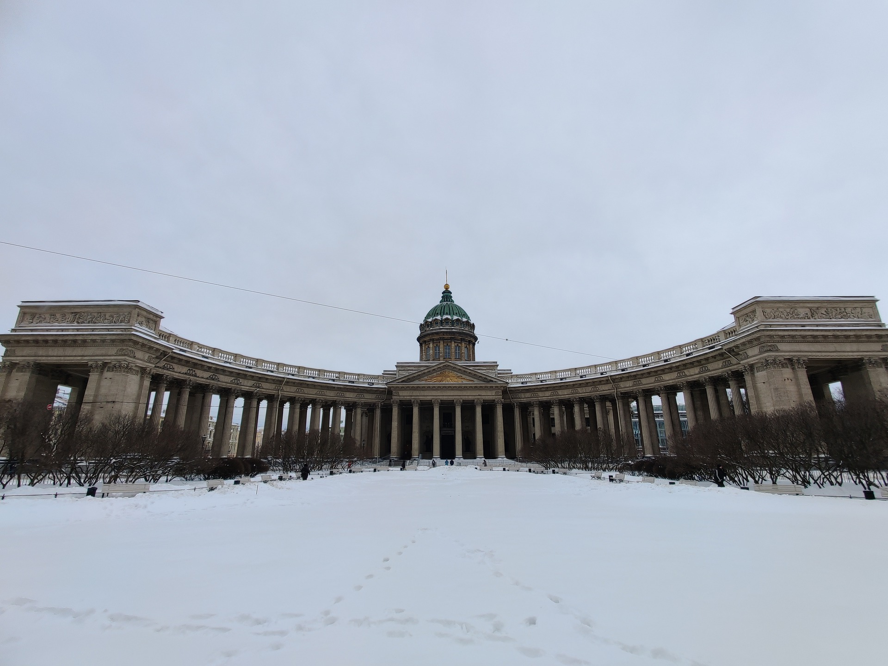
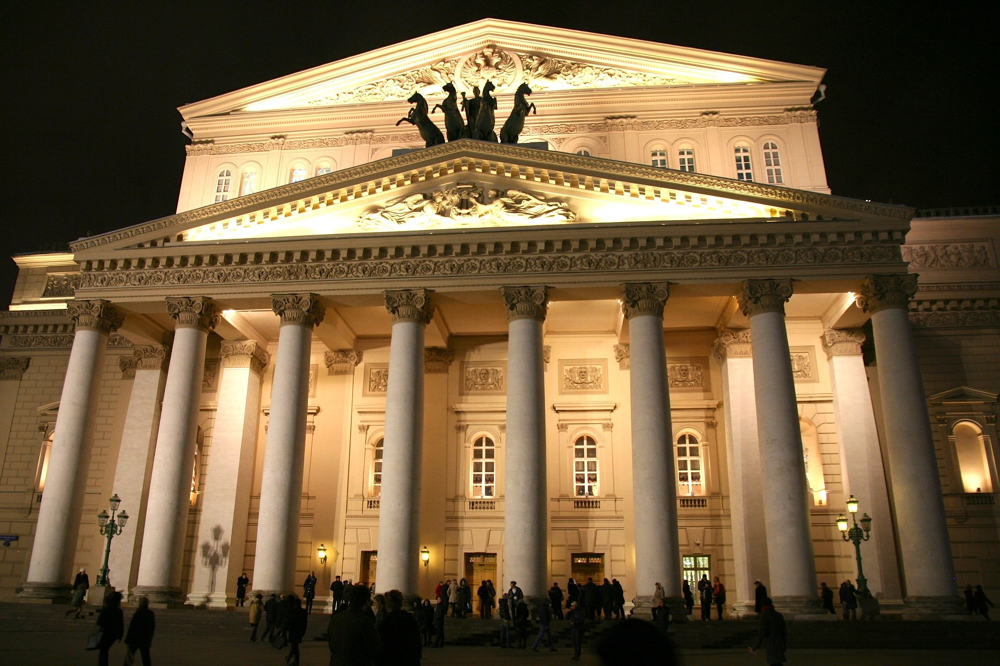
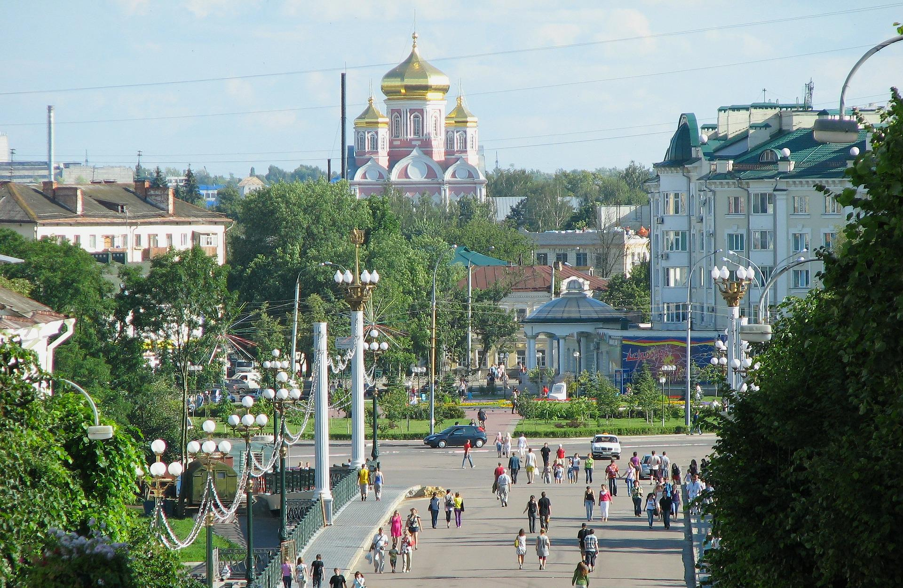

Rusia (en ruso, Росси́я, romanización Rossíya), conocida formalmenten. como Federación de Rusian. (en ruso, Росси́йская Федера́ция, romanización Rossíyskaya Federátsiya) y también citada en ocasiones como Federación Rusa, es un vasto país que se extiende sobre Europa del Este y Asia del Norte.n. 3 Es el país más extenso del mundo, con una superficie de 17 125 191 km²,2 equivalente a algo
más de la novena parte de la tierra firme del planeta, y posee una gran variedad de relieve y de ecosistemas. Su capital es la ciudad federal de Moscú.
|
- Kremlin
La ‘Casa Blanca rusa’ está formada por un conjunto de edificios civiles y religiosos, cuatro palacios y cuatro catedrales, para ser exactos, agrupados en un recinto que delimita con la Muralla del Kremlin. El primero de esta lista de lugares turísticos de Rusia está abierto al público desde 1955, y en 1990 fue incluido en la lista de Patrimonios de la Humanidad de la Unesco. Puede visitarse con dos
tipos de entrada: una para el territorio exterior del Kremlin y la plaza de las catedrales, y otra para acceder al museo de la Armería. Ambas merecen la pena. 
- Palacio Peterhof
Sin tener nada que envidiar al de Versalles en cuanto a ostentosidad se refiere, el Palacio Peterhof se encuentra a 26 kilómetros de San Petersburgo. 20 fuentes, 2 cascadas,
cerca de 40 estatuas y más de 200 bajorrelieves dan una idea aproximada de las dimensiones de la que fuera residencia de verano de Pedro I el Grande. 
- Catedral de Kazán
Consagrada a la Virgen de Kazán, icono más venerado del país, esta Catedral que visitar en Rusia fue construida entre 1801 y 1811. Fácilmente reconocible por sus 96 columnas, siguiendo el modelo de la Basílica de San Pedro en Roma, guarda entre sus paredes la imagen de dicha virgen,
símbolo de fe en toda la nación. 
- Teatro Bolshói
Espacio físico, compañía de teatro, danza y ópera, el Bolshói fue fundado en 1776 por el príncipe Piotr Urúsov y el empresario inglés Michael Maddox. Uno de los lugares más turísticos de Rusia puede ser visitado de dos maneras:
adquiriendo entradas para acudir a alguna de sus representaciones o con una visita guiada en inglés, lunes, miércoles o viernes. 
- Sochi
El centro vacacional más grande que visitar en Rusia está rodeado por las montañas del Cáucaso y se extiende a lo largo de 147 kilómetros por la costa del Mar Negro. Los complejos turísticos de Sochi reciben cada año a más de cuatro millones de visitantes en busca de su clima templado, bellas playas,
lagunas con minerales y vegetación subtropical. 
|
OTROS LUGARES
|
|
BRASIL
|
|
|
|
Tokyo
|
|
|